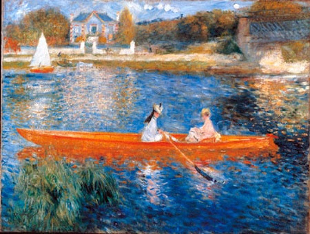
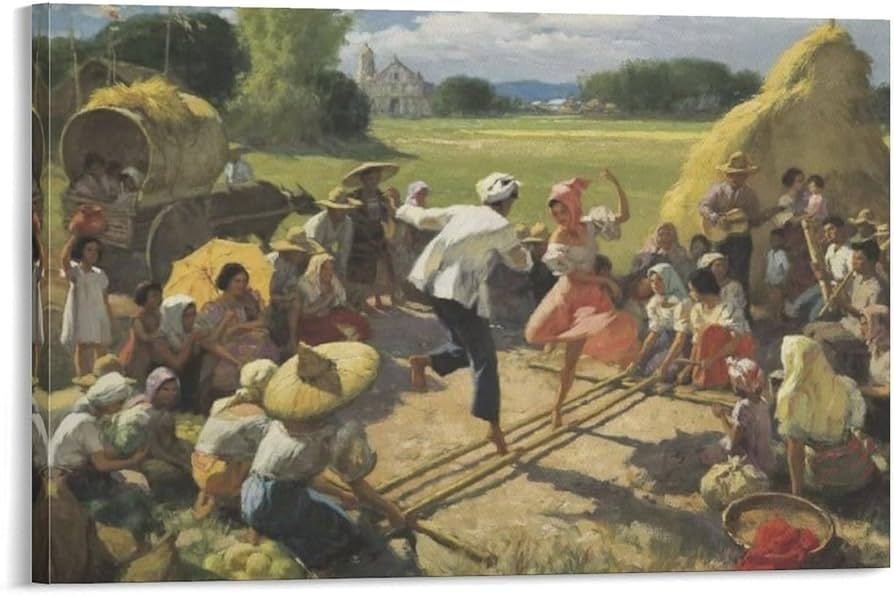

Descubre el arte de Guayanes
Ecuador tiene una rica historia artística, que refleja tanto su diversidad cultural como sus realidades sociales y políticas.
Galería de Arte

“Cataratas Kaieteur” – Aubrey Williams
Representación de la famosa cascada de Kaieteur, capturando la majestuosidad de este sitio icónico.

"Canoa en el río" – Denis Williams
Una obra que refleja la vida a lo largo de los ríos de Guyana

“El viejo Georgetown” – Bernadette Persaud
Persaud es conocido por sus vibrantes escenas de Georgetown, la capital de Guyana. Sus obras reflejan su herencia india y la rica diversidad de la vida urbana en el país.

"Danza del bambú" - Philbert Gajadhar
Gajadhar explora la cultura india de Guyana a través de esta pintura que representa una danza tradicional. Sus obras destacan por su uso de color y simbolismo.